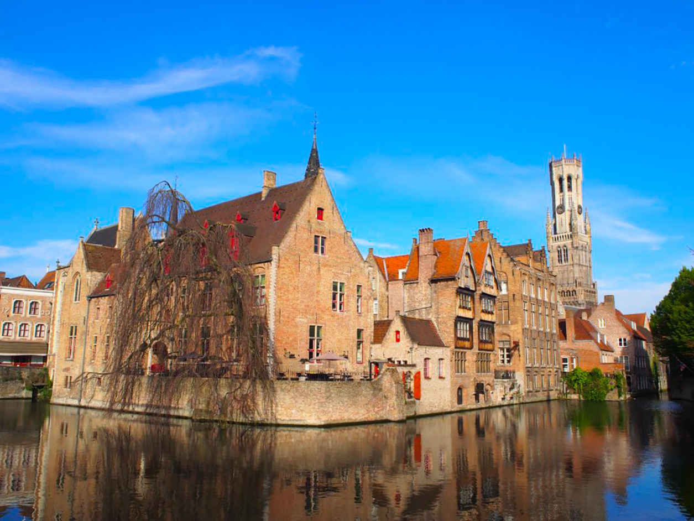

| 私たちはスマホ１つで自由になれる 〜世界を旅するゆとり戦略〜 | |
| ayaka | |
| Hitotsuku Publication (2018) | |
ａｙａｋａ
本書を手に取っていただきありがとうございます。オプトインアフィリエイトコミュニティ『ゆとり』を運営している「Ａｙａｋａ」と申します。
あなたは、年々増す税金のおかげで会社からもらう手取りは減っていませんか？ 長く勤めれば勤めるほど、仕事に対する責任は増し、忙しくなっていきますよね。それなのにもかかわらず、給料はなかなか上がりません。
２０１７年のサラリーマンの平均年収は「４１８万円」という数値結果が出ています。しかし、あくまで平均です。これを下回る方も多くいらっしゃるはず。かつての私の月収は20
万円で、年収でも３００万円程度でした。生活でいっぱいいっぱいで、自分の余暇を楽しむことができませんでした。漠然とした不安を将来に抱きながらも、会社に頼って働くしかないと思っていましたが、なんとかしないといけないという危機感から私は行動し始めました。そして、私は自由気ままに生きるライフスタイルを手に入れ、会社員時代には考えられないような順風満帆な生活を送っています。
本書を手に取っていただいているあなたも、かつての私と同じように、危機感や不安感を抱いているのではないでしょうか？ 諦めてしまっている方もいらっしゃると思いますが、決して、「もう時すでに遅し」ではないのです。私としては、現段階であなたが、その危機感を抱いていることに気付いているということは、まだまだ自分の人生をなんとかできると思っています。
自分で気がつけたあなたには、自分の足で進む力があるということです。
本書は、私がどのようにこの漠然とした不安を取り除き、会社員から社長になり、人生の自由を得ることができたかを解説していきたいと思います。せっかくなので、私が今まで海外に行って撮ってきた写真も一緒に載せていきたいと思います。よかったらそちらも御覧ください。
あなたの人生を変えるきっかけになれば幸いと思い、執筆しました。ぜひとも、読み進めていただければと思います。
Ａｙａｋａより
タモンビーチ＠
グアム
「この間、私が撮ったグアムでの写真です！ 透き通るようなオーシャンブルーな海！ 泳ぎまくりました♪
」
日本では、好きなことをして生きている人のことを、悪いことをしているかのように批判を浴びせたり、冷たい目で見たりする人が多いですよね！ 私の自由気ままな生活を、ＳＮＳで見かけては批判する人だっています。はっきりいうと、ひがんだり嫉妬しているだけだと思います。
日本社会では、ほとんどの人が好きなことをしながら生きたくても、それをできないでいます。なぜなら、ほとんどの人が自分には会社しかないと思っていたり、会社での仕事に追われて忙しかったりしているおかげで、自分には自由な生き方ができないと勘違いしているからなのです。
昔は私もそういう人たちのうちの１人でした。今でこそ、自由気ままに好きなことだけしながら生きていますが、自分には何もできないと思っていました。会社の仕事に時間を追われ、満員電車に揺られながら帰り、そして、寝るだけの生活を送っていた私は、自分の大好きな海外旅行に自由に行けるわけがないと思っていました。
テレビ番組の海外特集を見ながら、いつも自由に行ってみたいと思いながら、限られた余暇を過ごしていました。そんな生活に飽き飽きしていました。そして、いつでも海外旅行に行けるような生活を手に入れてみたいと思っていました。
それがモチベーションとなって、「自由気ままに生きる」にはどうすればいいかを調べるようになりました。自分を変えるために、情報を仕入れては、環境を変えたり、行動に移したりするようになりました。これがきっかけで、私は、会社に縛られた奴隷的な生活から徐々に脱していくようになりました。
今では、自由気ままに生きています。何時に起きてもいいし、出勤もしなくてもいい。そしてなにより、大好きな海外旅行にいつでも行ける自由を手にすることができました！帰って寝るだけの中身のない生活から解放され、今では好きなことだけをして生きています。自分の望むものを叶えることができました。
ハロン湾＠
ハノイ
「世界遺産ハロン湾でクルージング！ ドラゴンボールの世界がここにありました！ 神秘的なこの自然の景色がいつまでも残りますように。」
世間一般的には、「人生お金が全てじゃない」とよく言われています。私もそうではないと思っていましたが、ほとんどの人たちの悩みのすべてがお金に行きつくのです。私も会社員だったのでよくわかります。好きで凄く行きたかった海外旅行に行くための、お金も時間もありませんでした。
ちょっと豪華な食事を取りたいと思っても、普通より高いからと言って安い食事にしたり、雑誌に載っているおしゃれなバッグを買おうと思っても、高くてお金がないからしかたなく、普通のバッグにしたり、なによりも大好きな両親に親孝行したくても、自分の生活だけで精一杯でなかなかできなかったりしました。親孝行については、帰省するためのお金もなかったぐらいです。それもこれもすべてお金がないからでした。
当時は、月収20
万円なので、やりたいことを我慢する生活を強いられていました。我慢することに慣れてしまい、感覚が麻痺していました。大金を持ったこともないのに、「お金だけが全てではない」と思っていました。
ですが、お金がないことで、自分だけが我慢をするならいいのですが、お金がなければ家族を守ることも喜ばせることもできません。自分の大切な子供に、習い事も質の良い教育を受けさせることも、大切な親に孝行することもできないのは大問題です。自分の大切な人まで我慢させることになります。これくらい、お金というのは、人や自分のためになにかをするのに、とても必要なものなのです。
ほとんどの人と同じように、私もお金がない故にたくさんの悩みを持っていました。経済力がないから我慢ばかりの人生でした。そういう人生から抜け出すために、経済力をつけることにしたのです。会社員時の月収はわずか20
万円でしたが、今では月収１０００万円を突破しました。
これほどのお金を手にしたことで、私の人生は変わりました。経済力をつけて退職し、大好きな海外旅行や美味しい食事を満喫できるようになりましたし、大好きな両親に孝行できるようにもなりました。気ままに自由に生きる人生を手に入れたのです。
サルタンモスク＠ アラブストリート
書店に行くと、会社でどのように昇進していけばいいかを説明している本が大量にあります。資格取得に関する参考書もちらほらとあります。さらに、ネットを見れば、転職エージェントが血眼になって転職希望者を探し回っていることがわかります。
こういうこともあり多くの人が、人生を変えるために、資格取得、昇進、転職をするために、余暇を勉強に充てています。ですが、実際はどうでしょうか？ 本当にこれで人生が変わるのであれば、こういう本は徐々に少なくなるはずです。しかし、実際、取った方が良いとされる資格の数は年々増加しています。
私は、人生を変えるためには、資格取得、昇進、転職は必要ないと思っています。かつての私は、生きていくためには会社で勤めたり雇われて働くことしかないと思っていたので、給料アップのためには、資格取得するか、昇進するか、転職するかの選択肢しかないと思っていました。そのおかげで、20
代の時に、５社にわたり転職を繰り返したり、国家試験資格合格を目指したりしました。確かに、会社員としての給料が上がれば、少し豊かになりますが、あくまで会社員ですので、その分時間に追われる生活になり、自由がなくなります。
ですが、本当は自分でも稼げる力があるのです。稼げる力というのは、才能に基づいているわけではありませんし、資格取得、昇進、転職の必要もありません。きちんとしたやり方を知れば、しっかりと自分の力でも稼げるようになるのです。車の運転も、自動車学校に一定期間通えば、できるようになりますし、上手になりますよね？ そういうことなのです。このことを知っているか知らないかで、あなたの生活の質は大きく変わると思います。
そして、 自分の力で稼げる方法を知った今では、会社経営をするまでになり、雇われの身だった会社員時代よりも、圧倒的に収入を上げられるようになりました。もし、あなたが自分の人生を変えるために、資格取得、昇進、転職のために頑張っているのであれば、変わらないということを知ってください。自分の人生を変えるためには、自分の力で稼げる方法を知ることが必要なのです。次節以降では、どうやって私が今の自由な生活を手に入れたかを解説していきたいと思います！
ガーデンズ・バイ・ザ・ベイ＠
シンガポール
「シンガポールで一番感動したのがこちらです！ 近未来的で、光と音のショーは最高でした！」
先ほど申し上げたように、自分の人生を変えるため、私は会社員として副業を始めました。副業と言っても、自分の休日を丸々１日使うわけではなく、毎日数分から数十分の間だけ副業ビジネスに時間を割いていました。ここで、副業と聞くと、本業より作業量とそれにかかる時間がはるかに少ないので、「本業より稼げるわけがない」と思われがちですが、実は私自身、初月で20
万円を稼ぎ、そしてあっという間に、月収30
万円を達成しました。
その時の本業が月収20
万円でしたので、すでに数ヶ月で本業の収入を超え、単純計算で月収50
万円となりました。そして、気がついたら副業だけで月収１５０万円を突破していました。こういうと、ほとんど人は決まって、「どうせ才能でしょう」や「ビギナーズラックじゃないの？」という言葉を放ちますが、先ほども言ったように私自身に才能や能力などはありません。それに、それまではビジネスなんてやったことも無かったくらい私はド素人でした。
それでも初月で20
万円という実績を作り、今では多くの仲間たちが私のコミュニティに集まってきてくれています。そして、講師たちがメンバーに教えた結果、どんどん成果を出している人ばかりなのです。なので、私が副業で始めたビジネスをやるのに、才能も運も必要ないと思っています。それに、私自身ビジネスに出会ってから１年も経たないうちに月収２００万円突破を達成しましたので、私自身がその証明なのです！
これは、月収20
万円の会社員時代からは考えられないスピードです。海外旅行特集のテレビ番組をずっと指をくわえて見ることしかできませんでしたが、それは会社員だったからです。会社員で副業を始め、稼げるようになり、社長になった今では、好きな時に好きなだけ大好きな海外旅行へ行けるようになりました。指を加えてテレビ番組を見る必要は無くなりましたし、普段の生活の質もグンと上がりました！
こうやって自由な生活を手に入れられたのは、間違いなく副業で始めたビジネスのおかげです。私は特に汗を流して頑張ったわけでもありません。忙しくてもちまちまと自分の空いている時間にビジネスをやり続けた結果が、今の状況なのです。誰でもできるビジネスだからです。
副業を始めることで、自分の人生を変えることができます。あなたも、自分の人生を変えたいと思っているはずですよね！ そこで、稼ぎやすい副業ビジネスの特徴を挙げていきます！ あなたの人生を変えるかもしれないお得な情報満載です！ ぜひとも読み進めてくださいね。

ブルージュ＠
ベルギー
「ベルギーの水の都ブルージュでクルージング！ 北のベニスと呼ばれるほど、美しいところでした！」
本業よりも労力がかかったり作業量が多いビジネスだと、副業でやるのはなかなか難しくなります。やりやすいビジネスをやっていった方が長く続けられますし、稼ぎやすく達成感も得られやすいでしょう。あなたも、やりやすい副業の方がいいですよね？
そこで、本節から、やりやすい副業についてあなたに解説していきたいと思います。まずは、副業でも稼ぎやすいビジネスの４つの特徴から述べていきましょう。
①
在庫を持たない
在庫が必要ないビジネスであれば、商品を無限に増やすことができますよね？ それにいちいち仕入れる必要もなければ売れ残ることもないので、心配のタネがぐんと減ります。例えば、食品の物販をやるとなると、賞味期限もありますし、仕入れるだけでお金がかかります。それにくわえ、場所も取らなければならないのでかなりリスキーです。反対に、在庫がないビジネスの場合はほぼリスクはありませんので、安心して始められます。
②
資本金がなくても始められる
資本金が膨大なビジネスだと始めづらいです。例えば、不動産仲介業を自分で始めるには１００万円の頭金が必要となりますし、飲食店なら１００万円どころではありません。かなりリスキーですよね？ ですが、資本金がなくても始められるビジネスなら、リスクは抑えられます。ＳＮＳを使って稼ぐビジネスであれば、資金がなくても始められるので、始めやすいでしょう！
③
利益率が高い
利益率が高ければ高いほど稼ぎやすいです。例えば、物販で10
万円で仕入れたものが16
万円で売れたとしましょう。６万円儲かっているので、利益率は10
万円／16
万円×１００＝６２．５％
ですが、もし売れなかった場合、利益率は０％
で仕入れ代だけが負債としてのっかかります。では、何か情報を与える教育業界ではどうでしょうか？ 頭にあることを教えれば、それだけで儲かりますよね？ お得な情報を与えるだけであれば、自分がその情報を持っていれば、なにかを仕入れなくても稼ぐことができますので、単純に考えれば利益はほぼ１００％
となります。
④
定期的に一定の収入が入る
ビジネスをやる上でなによりも一番大事なのは、安定性です。安定的に収入が入るかどうかで、ビジネスの進め方に違いが出るでしょう！ 物販や投資をやるとなると、才能や運を兼ね備えていない限り、一定の収入を得ることは難しいです。それにくわえ、時間がかかってしまうため、本業に支障をきたします。ですが、あまり時間がかからず、一定収入が入ってくる「インターネットビジネス」であれば安心です。きちんとしたやり方があるので、才能や運に任せなくても、きちんとした一定収入が入ってきます。
ほとんどのビジネスは、この４つの特徴をすべて満たしていません。だから、ある程度の才能とコネが必要になってきますが、誰しもがそれを兼ね備えているわけではありませんよね。かつての私もそうなのですが、才能やコネなんて全くありませんでした。その状態で始めたビジネスは、「オプトインアフィリエイト」と呼ばれる「インターネットビジネス」です。次節ではこのビジネスについて、解説していきますので、お楽しみに！
ローテンブルク＠
ドイツ
「ローテンブルクのかわいい家と街並みが見下ろせる絶景スポットへ！」
インターネットビジネスは、ネットを使ったビジネスです。様々なビジネスがある中で、私が始めたのは、オプトインアフィリエイトと呼ばれるビジネスでした。なぜなら、このビジネスが一番稼ぎやすく、始めやすいと思ったからです。全節で述べた４つの稼ぎやすいビジネスの特徴を全て満たしていますが、実はオプトインアフィリエイトにはもっとたくさんの魅力があります。
①
顔出し不要
第一に顔出しは不要です。顔出ししてアフィリエイトをやっている人もいますが、顔出しなしでもできますので、個人情報を特定されることなく始めることができます。こういう利点に加え、容姿は関係ないので、非常に始めやすいです。女性でも安心して始められますね！ また、まだまだ副業が認められていない会社に勤めている会社員の方でも、会社にバレずに安心して始めることができます。
②
スマホ１つで始められる
スマホがあれば、オプトインアフィリエイトは始められます。仕入れをしなくて良いですし、営業はネットで行うので、実際に営業へ出向く必要はありません。ＭＬＭのように、実際のリスクを背負う必要はありません。
③
損失がない
ネットとＳＮＳを使ったビジネスなので初期投資なしで始められます。無料で登録できるＳＮＳは、非常に有効な手段です。それにくわえ、たとえ失敗してしまっても、損失が起きることはないので、リスクはありません。
④
スキル・才能は関係なし
用意された文章をコピペして、ＬＩＮＥ＠
やＳＮＳ、メルマガで送るだけなので、スキルや才能は関係ありません。しかも数分でできることです。それにくわえ、商品を売る必要はないので、アフィリエイター（アフィリエイトをビジネスとしている人のこと）から顧客に対するサポートは必要ありません。楽ですよね！
オプトインアフィリエイトにはこのような特徴があり、初心者の方でも始めやすいビジネスとなっています。私はこれを始めてからたった１年で、オプトインアフィリだけで月収５００万円を達成しました。時間も手間暇もかからないのに、非常に稼ぎやすく、個人情報も守れるので、普通のＯＬをしていたビジネス初心者の私でもできました。
では、オプトインアフィリエイトが具体的にどんなビジネスか気になる方もいらっしゃると思いますので、具体的にこのビジネスについて解説をしていきたいと思います。
ウインザー城＠
イギリス
「エリザベス女王が週末を過ごす場所です！ 世界の素敵なお城巡りも大好きです！」
オプトインアフィリエイトという言葉を初めて聞く方は多いと思います。そもそも、「アフィリエイト」自体分かっていない方もいらっしゃると思うので、そこから解説していきます。
ブログを読んでいる時、貼ってある広告のリンクをクリックしてしまい、広告主の商品販売ページに飛んでしまったという経験、あなたもしたことがあると思います。実は飛んだ先で何かを購入すると、広告主の販売売上になるのです。この際、広告リンクの貼られたブログの運営者には、１件あたりいくらか報酬が入ってきます。これが「アフィリエイト」です。
基本的にはアフィリエイトとは、ブログやＳＮＳなどに広告リンクを貼って、広告主の商品の営業をしていくことを指します。リンクのことを「アフィリエイト・リンク」、アフィリエイトを行っている人のことを「アフィリエイター」といいます。リンク先の販売ページのことを「ランディング・ページ」、略して、「ＬＰ」といいます。
ほとんどの場合、「ＡＳＰ（アフィリエイト・サービス・プロバイダー）」と呼ばれるネット広告代理店が、広告主に営業し、広告を集めます。アフィリエイターは、集められた広告を使って稼ぐのです。広告をいちいち探さなくても、ＡＳＰに問い合わせれば気軽にアフィリエイトを始めることができます。普通、アフィリエイトは、物販販売ページへのリンクを貼ることになるので、「物販アフィリエイト」とも呼ばれます。
これに対し、「オプトインアフィリエイト」は、商品の販売ページに行かせ、購入させることではありません。メルマガに「読者のメルアドを登録させる」ことや、ＬＩＮＥ使用者をＬＩＮＥ＠
（簡単にいうと、ＬＩＮＥ版メルマガのこと）に登録させると、アフィリエイターに報酬が支払われます。購入させなくていいので、「物販アフィリエイト」と比べ、報酬をもらうハードルが非常に低いのです。
ちなみに、「オプトイン」はメルアドでメルマガなどの受信を承諾することを意味しています。このように、オプトインしてもらうことによってアフィリエイターは報酬をもらうので「オプトインアフィリエイト」と呼ばれているのです。
基本的には、オプトインアフィリエイトの場合、購読無料のメルマガの申込を受け付けているＬＰが多いため、オプトインをする側もお金がかかりません。双方ともお金がかからないのに、報酬がもらえるビジネスであること、これがオプトインアフィリエイトの最大の魅力です。
ノイシュヴァンシュタイン城＠
ドイツ
「シンデレラ城のモデルとしても有名で、私が憧れていたお城です！」
オプトインアフィリエイトは、「オプトイン」させることにって報酬が発生するビジネスであると述べました。では、なぜ、無料メルマガに登録させるのにもかかわらず、報酬が発生するのか？ その疑問に答えていきたいと思います。
無料だからといって広告主（メルマガ配信者）になんら利益がなさそうに見えますが、実は、利益を上げているのです。広告主は、メルマガで見込み客を集めて、商品を買ってくれる人を増やしたいのです。その理由から、広告主は購読者を増やすために、アフィリエイターに広告費を払っているのです。ＣＭを例に考えると、似ていることがわかりますよね？ 企業は、莫大な広告費を使って、ＣＭを作って放映していますが、これは商品の認知度を広めるためにやっていることです。莫大な広告費は、商品の売上を上げることによって取り返せるのです。これの個人版がオプトインアフィリエイトだと思ってください。
また、オプトインアフィリエイトは雑誌にも例えることができます。雑誌にはさまざまな商品が紹介されています。商品の特徴やメーカー、注文方法までも載っていますよね？ ほとんどの場合、これは商品の売上を上げるために行われていることなのです。
同じことがオプトインアフィリエイトにも言えます。「無料メルマガ」は、売上を増やす商品紹介のためにあるものなのです。雑誌やＣＭと同じように、購読者や視聴者が増えれば増えるほど、売上を上げやすいのと同じで、メルマガの購読者を増やすために、広告主・販売主は、アフィリエイターに報酬を支払うのです。
また、メルマガでオファーされる商品の多くは、30
万円を超える商品です。広告主はきちんと儲かりますので、アフィリエイターに対する報酬は、ちゃんと発生するのです。それも、びっくりするくらい高額な報酬の場合もあります。オプトイン１件につき、１０００円〜２０００円の場合もあります。たった５件やれば、１万円です！
では、どのようなメルマガが多いかというと、読者が困っているトピックについて語っているものが多いです。基本的には、何かに困っていたり、情報を欲しがっている読者を、その悩みや欲を解決してくれるメルマガにオプトインさせることで、報酬を発生させます。オプトインアフィリエイトとは、ものを売るのではなく、有益な情報を与えることなのです。だから、初心者にも始めやすく、すぐに成果を上げることができます。私が運営しているコミュニティ参加者のほとんどが数ヶ月で成果を出しています。
円形闘技場＠ タラゴナ
当たり前のことですが、いくら始めやすいからといって、効率悪くやっていたら時間と労力がかかり、お金が稼ぎづらくなります。なので、せっかくやるなら効率よくやる方がいいですよね？
効率よくやるためにはまずは、強力な媒体を持つことが大事です。簡単にいってしまえば、何かの分野で有名人になって影響力を持つことなのですが、これだとハードルが高いです。「結局は見た目とか能力になるんでしょう？」と思われがちなのですが、先ほど言ったように、オプトインアフィリエイトに顔出しは不要です。私自身顔出ししておりません。それでも、ネットで影響力を持ち続け、多額のお金を稼いでいます。
では、どうすればネットで影響力を持ち続けられようになるかというと、ＳＮＳやメルマガ、ブログなどで情報発信をし続けることです。特に月収１００万円以上のアフィリエイターは、ＳＮＳに力を注いでいます。初心者には、ブログやメルマガは難しいと思いますので、ＳＮＳで情報発信をすることから始めていきましょう。
情報の内容は、人の役に立つことである必要は全くありません。自分の好きなこと、目標、現在思っていることなどを発信していくのが、情報発信です。これによって、自分のファンが増えていき、オプトインさせやすくなります。できれば毎日投稿するのがベストですが、数日に一回は必ず投稿しましょう。最初はなかなか「いいね」やフォロワーは増えませんが、続けていけばいくほど、増えていきますのでご安心ください。影響力が増えた後に、オプトインすればきちんと稼げるようになります。
メスキータ＠ コルドバ
先ほど、情報発信をしていき、ファンを増やすことでオプトインさせやすくなると申し上げました。通常、サイトはグーグルの検索エンジンの評価を受けます。そのおかげで、同じような内容でも検索結果の順番に差が出てくるのです。ブログも例外ではありません。検索順位を上げるのは初心者には難しいので、ブログは勧めません。
一方、ＳＮＳはグーグルの評価を受けることはあまりありません。様々なＳＮＳがあり、どれから始めればいいかわからない方もいらっしゃると思いますが、数あるＳＮＳの中で、初心者の方に一番に勧めたいのは、「Ｆａｃｅｂｏｏｋ」です。
Ｆａｃｅｂｏｏｋでは、人が共感してくれそうな記事を投稿すれば、「いいね」される可能性が高いです。ブログでは、文章力がないと、グーグルは評価してくれませんが、Ｆａｃｅｂｏｏｋでは多少文章力がなくてもきちんと人から評価をされるので、情報発信をしやすいと言われています。
基本的に、「いいね」や共感をもらいやすくするためには、食べ物や海外旅行の写真や、かっこいい言葉を語ることが有効なのです。慣れれば自分の学んできたことや、時間とお金があれば自分の旅行の写真をアップすることが簡単になってきますが、最初はそうもいかないでしょう。
自信のない初心者でも簡単にできる「いいね」を増やす方法があります。「リライト」です。「いいね」されそうなネタをサイトからコピペし、自分の言葉に書き直すのです。これを繰り返していけば、徐々に「いいね」が増え、自分のファンが増えていきます。
タイミングを見計らい、「いいね」をしてくれたファンに向け、アフィリエイトを仕掛けていったり、このあと解説する「ＬＩＮＥ＠
」のＩＤやＵＲＬを見せるのです。これでちょっとずつ稼げるようになりますよ！
風車＠ ラマンチャ
本書を読んでくれているあなたも、ＬＩＮＥを使われていると思います。日本国内人口に照らし合わせると、ＬＩＮＥのユーザー率は90
％
を超えています。実は、ＬＩＮＥは個人アカウントですが、それとは別に、ビジネスや情報発信に利用できる「ＬＩＮＥ＠
」というものがあります。ＬＩＮＥ＠
のアカウントには、必ず、アカウント名の先頭に「＠
」が付いています。
「ＬＩＮＥ」のアカウントではないので注意してください。ＬＩＮＥ＠
は、芸能人や、お店のアカウント、ビジネスなどでよく利用されています。あなたも、スタンプを無料でもらう時に、ＬＩＮＥ＠
のアカウントと友達になることが条件であるおかげで、アカウントを友達に追加してしまったことはありませんか？ その後、その企業やお店についての情報を受け取っているはずです。簡単に言えば、ＬＩＮＥ＠
はＬＩＮＥ版メルマガみたいなものですね。ちなみに、＠
を付けずに検索して、もしアカウントがヒットしたとしてもそれは個人アカウントなので注意してください！ 私も活用しているＬＩＮＥ＠
ですが、個人法人に関係なく誰でも無料で作れます。
ＬＩＮＥは「１：１」のメッセージが基本になりますが、ＬＩＮＥ＠
は「１：１」の他に、「１：全体」のメッセージ送信ができることが大きな特徴になります。つまり、自分のＬＩＮＥ＠
に友達登録してくれている人全員に一斉配信できるということなので、メルマガとよく似ています。ユーザー率90
％
のＬＩＮＥに、ＬＩＮＥ＠
でメルマガを送れば、たくさんの人に読まれやすいですよね。
さらに、予約メッセージ送信や予約投稿、自動返信などもできます。メルマガの予約一斉配信機能のようなものです。メルマガよりも到達率が高く、開封してくれる人も多い点がＬＩＮＥ＠
での配信のメリットです。
ビジネスでは、信頼関係がなければお金は作れないと言われています。そういう点を考慮すると、ＬＩＮＥ＠
は、メッセージを送ることも受け取ることも手軽にできるコミュニュケーションツールであり、ビジネスで信頼関係を築くにもＬＩＮＥ＠
を導入するのが有効的だと思います。
私自身もＬＩＮＥ＠
を活用して、様々な方とメッセージをしています。メリットのある情報を、メッセージを受け取ってくれる方に届けたいと思っております。興味のある方は、ぜひ、私のＬＩＮＥ＠
にもご登録ください。
基本的に、本書で述べたことをやっていただければ、そのうち月収30
万円を突破するはずです。ですが、そのためには、まずは稼いでいる人と同じマインドを持ち、さらに稼げるようになる環境にいることが必要です。マインドがしっかりしていなかったり、稼げるようになる環境にいなければ、稼ぎ続けることが難しくなるからです。今まで、様々な方を見てきましたが、稼げる人と稼げない人の違いは、これらのマインドと環境を持ち合わせているか、持ち合わせていないかの違いだと考えています。そこで、次章では「本当に自由になるため」に必要なことについて語っていきますので、本当に人生を変えたい方は、ぜひとも読み進めてください。
アルハンブラ宮殿＠ グラナダ
めまぐるしいスピードで変化していく現代では、ほとんどの人たちはどんな職業でどんな立場でも、みんな忙しそうに動いています。会社員は出社しなければいけませんし、専業主婦も家でずっと家事をしていなくてはなりません。学生は勉学とアルバイトに忙しく、就活生は会社の面接で気力と時間を使っています。
ですが、いくら忙しくても「スキマ時間」があるはずです。ビジネスに取り組むためには、そういう「スキマ時間」をいかにうまく使えるかが重要なポイントになってきます。
私もかつてはすごく忙しい身でした。会社員をしながら大学院にも通いながら、弁理士試験の受験生をしたこともあります。その頃の経験談はあなたのためになると思いますのでお話したいと思います。
会社員をしながら、会社が終わったら大学院にも通い、帰宅後には弁理士試験の受験勉強もする毎日を送っていました。そんな調子では、１日24
時間あっても足りないので、だいぶ睡眠時間を削りました。４時間睡眠は当たり前で、徹夜の日も多々ある生活でした。
ただ睡眠時間を削るのに限界があるので、最終手段として何よりも「スキマ時間」を有効活用することを努力しました。
私の例で言えば、往復で２時間かかる通勤時間の移動中や、お昼ご飯を食べてからの30
分間のお昼休みで２時間半の時間を確保していました。２時間半でできることはたくさんありますよね？ そこで、動画講義を音声抽出してｉＰｈｏｎｅに入れ、２倍速で学習したり、テキストの重要箇所を縮小コピーやファイリングしたりして、いつでも勉強できるように、カバンの中に入れすぐに取り出せるようにしていました。
さらに言えば、テキストが取り出せない満員電車の状況ではレポートの課題を考えたり、考えた内容をｉＰｈｏｎｅのメモに残したりしていました。なかなか時間が取れない状況でも、スキマ時間を逃さず、活用していました。いつでもどこでも即勉強できる状態を作り、「１分でも」「スキマ時間」があればすぐに学習スイッチＯＮに切り替えて取り組んでました。
あくまで体感ですが、忙しければ忙しいほど集中力がアップして、短時間で濃い取り組みができます。私の通っていた大学院には学生だけをやっている人もいました。私よりもはるかに時間があるはずなのに、私の成績や修士論文の結果はいつも上位でした。時間がなくても何事も取り組めますし、きちんとした結果も出せるということです。
多くの人は忙しいことは弱みと捉えますが、実は忙しい方が集中して取り込めます。オンとオフの切り替えが速くなるからです。時間的に余裕がある今では、スイッチオンするまでに時間がかかることもしばしばあります。
もちろん、そういう自由な生活をしているので本望なのですが、きっともし忙しくても出している成果は変わらないでしょう。逆に言ってしまえば、暇でも成果は変わらないと言うことですね。
「忙しいから」「時間がないから」と言ってビジネスや夢を諦めたり、遅らせたりするのではなく、忙しいことを強みに変え、「スキマ時間」を活用すれば、もっと成果が出るはずです。なので、あなたには、ぜひともスキマ時間を活用していただいて、自分の夢や自由を叶えていただければ嬉しいです。
サグラダファミリア＠ バルセロナ
本書を取っていただいたあなたは、どう思いながら読んでくださっているのでしょうか？ おそらく、少なくとも自分の人生を変えたいと思っているからこそ、読んでくれているのではないかと思います。
今までいろんな人を見てきましたが、確実に稼げるようになっている人と、全くもって稼げていない人がいます。私の経験論ですが、おそらく両者の決定的な違いは、実際に行動しているかいないかだと思います。稼げていない人は、指をくわえて見ているだけなのです。
そういう人は、稼いでいる人や無料の有益な情報を目の当たりにしても、他人事のように何も取り入れようとしませんし、行動しようとも思いません。それでは何も変わらないのは当たり前ですよね。
では稼げる人は何をしているかというと、稼げる人がいればその人に話しかけて情報を仕入れたり、有益な情報があればそれを試すようにしています。なんでも自分事と捉え、しっかりと行動をするのです。
何も行動しない人に私が何を言っても、 いくら稼げる有益な情報をあげても、稼げるようになりませんし、環境は変わりません。行動しない人が人生を変えることは決してありません。なにかを変えたいなら、必ず行動をしてください。これは非常に重要なことです。
実は私もかつては、指をくわえてみているだけの人でした。行動しないので、何も人生は変わりませんでした。しかし、その状態から脱し、毎日スキマ時間を使ってコツコツやっていったら、あっという間に自由を手に入れました。会社員から社長になり、副業を始めてからわずか１年半で、月収１０００万円になりました。
これは私の経験でもあるので、もう一度言いますが、行動しないことをやめましょう。まずは行動することを始めましょう。そうすれば、思っていたよりも成果は早く出てきます。
カサミラ＠ バルセロナ
現代社会には、自分の個性を大切にする傾向にあります。しかし、私が思うに、これを取り違っている人があまりにも多いのです。どういうことかというと、できる人の元に勉強するというよりも、独学で我流で勉強したがる人が多くなっている気がします。
ですが、そういう人ほど、一生懸命成果を出そうとして頑張っても、成果はなかなか出ません。もともと成果の出し方がわからない人が、いくら頑張っても、成果を出す確率はかなり低いはずです。なぜなら、成果を出すための思考やノウハウがわからないからです。
それでは闇雲に時間を浪費するだけで、いつまでたっても成果が出るようになりません。イコール、人生は変わることはないのです。ではどうすればいいのかというと、できる人に聞けばいいのです。
茶道では、守・破・離の流れをつかむことで、上達するようになり、最終的には一人前になると言われています。守は、師匠を見つけて師匠から習うということです。つまり、できる人から習うということです。破は、一通り師匠から基本を習ったら、応用に進むということです。ここからが個性の出しどころです。ただし、それはあくまでも師匠の元で学び続けることが前提となります。そして、離は、一人前になり、師匠から独立したり師匠と同じように人に教えられる立場になるということです。
この流れを踏まえると、ビジネスで成果を出すためには、やはり最初はできる人の言うことに耳を傾けることが大切になってきます。ビジネスで月収１００万円を目指したいのに、ビジネス未経験者が自己流で取り組むのは無謀です。自分の目指している先を行っている人から学び、その人のいうことに耳を傾けることが大事なのです。
本当に私のように自由に、ゆるく楽しく気ままに世界を旅したり、ストレスフリーライフを手に入れたい人は、ぜひ私のＬＩＮＥ＠
に登録してみてください。
カサバトリョ＠ バルセロナ
全てのことについて言えるのですが、なにかを成し遂げるためには、２つのことが必要です。「時間」と「お金」です。基本的に、なにか目的を達成するためには、２つのいずれかに投資すればいいのです。
英語を学ぶには、主に２つ方法があるのではないでしょうか。時間をかけて自分で勉強するか、お金をかけてプロから教えてもらいながら勉強をするかです。
時間をかけて努力をすれば実績が出ます。ですが、早く大きな実績を作るためには「時間」と「お金」の２つを同時に投資することが大事です。つまり、お金を投資して、実績を出すための正しいノウハウを入手して、正しい努力をするために自分の時間を投資するのです。
東大に行きたければ、時間をかけて独学するか、「時間とお金」をかけて予備校に通うかの２つの方法ですよね。ですが、前者の方法だとよっぽど頭が良くないといけないと感じませんか？ 難しいと感じるでしょうし、かかった労力と時間や、もし失敗してしまった時のことを考えると、損失が大きいとは感じませんか？ それに間違った勉強の仕方をしている場合もありますよね。確実性がありません。一方で、後者の方法では長年培われてきた勉強法を教えてくれますし、自分がわからない時でも先生に聞けば丁寧に教えてくれます。そうしたら、より確実に合格できそうな気はしませんか？
ビジネスもこれと同じです。なにかの成果を確実に出したいと思うなら、まずは、「お金と時間」の投資が大事なのです。
グエル公園＠
バルセロナ
「ガウディ作品のグエル公園！ 可愛らしくて、どこを切り取っても絵になる場所でした！」
自分の人生を変えるためには、周りにいる人たちを注意深く選んでいく必要があります。なぜなら、良い情報も悪い情報も人からもたらされるからです。悪い人や間違ったノウハウを教えている人たちと関わってしまえば、自分への悪影響は免れません。いくらネットビジネスといえども、素人が独学でやるのは難しいですし、それにもともと人というものは、他人に惑わされやすいので、周りに同じように頑張っている仲間がいないと、ビジネスに集中することは困難です。
今までの私の経験を踏まえていうと、１人でビジネスをやるのは非常に寂しく、苦労の連続でした。その寂しさと苦労の連続のために、何人の人が自分の夢を諦め、仕方なくビジネスをやめることになったのか、数え切れませんが、私は周りに仲間がいてきちんとやれば夢は叶うと信じていますし、そういう人たちを救いたいという思いを抱いています。
そこで、自分でオプトインアフィリエイトのコミュニティを設立しました。そこではきちんと成果をだしているメンバーが講師を務めており、初心者のメンバーに親切丁寧に、どうやればきちんと成果が出るかを教えています。わからないことがあれば、随時指導するのは当たり前なのですが、ここで仲間と出会い、ビジネスを続けていくモチベーションを得られることも大事になります。
今のところ、ほぼ全員が稼げているコミュニティです。月収30
万円稼げている人はざらにいます。こういう環境に自分の身を置き、きちんと学び実践していけば、自然とあなたの人生は変わっていくのではないかと思っています。
私たちのコミュニティに入るには、お金が必要です。なぜかというと、お金をかけてもらわないとコミュニティの大事さを実感できず、せっかく入ったのにもかかわらず、本気で取り込まないおかげで成果が出なくなる人も出てくるからです。それに当たり前ですが、時間をある程度投資して学んでもらわないと、成果は出ません。本気で変わりたい方だけを募るために、このシステムを作りました。
もし、あなたが本気で自分を変えたいと考えているのであれば、ぜひとも私たちと本気で頑張りましょう。私たちのコミュニティに「時間とお金」を投資してみてください。きっとあなたの人生は変わること間違いなしです！
グエル公園＠ バルセロナ
本書を最後までお読みいただきありがとうございました。ここで述べたノウハウやマインドセットは、オプトインアフィリエイトで成功するために必要なことですが、いくら情報を仕入れても、悩んでばかりで、結局１週間、１ヶ月間何にも取り組んでいないという人は多くいます。
「稼ぎたい」と思いたってから、すでに１年経ったのにまだ１円も稼げていない、あるいは思っていた額には程遠いという人が、私のもとにやってくることもあります。そんな方によくいうことは、「早くはじめの一歩を踏み出すことが大事」ということです。
悩んでばかりいては、意味がありません。まずはやってみる。それもできるだけ早くやることが大事なのです。最初の一歩を踏み出してしまえば、意外と軽いものだったなと思うことが多いものです。
特にネットビジネスの場合は、ネットを使うのですぐに実行できるはずです。才能もスキルもいらないオプトインアフィリエイトなら、なおさらなのです。行動力がある人は必ず稼げるようになります。私のコミュニティで学んでいる方は、確実に行動を起こし、着実に稼げるようになっています。
もし、あなたがここで決断し行動を起こせば、１年後に月収１００万円達成することもできます。私のように１年で月収５００万円もいけるかもしれません。とにかく重要なことは、はじめの一歩を踏み出せるかどうかです。
私たちと一緒に第一歩を踏み出したい方は、ぜひとも私のＬＩＮＥ＠
にご連絡ください。ぜひ、一緒に自由気ままな人生を手に入れていきましょう！
あなたとまた会えることを楽しみにしています。
タップしても登録できない方は、「＠ ａｙａｋａ３」でＩＤ検索して友達追加してください。（初めの＠ をお忘れなく）
タイトル 私たちはスマホ１つで自由になれる 〜世界を旅するゆとり戦略〜
発行日 ２０１８年１月13
日
著 者 Ａｙａｋａ
本書の全部あるいは一部をコピー、スキャン、デジタル化する無断複製は、著作権法上での例外である私的利用を除き禁じられています。本書を代行業者等の第三者に依頼してコピー、スキャンやデジタル化することは、たとえ個人や家庭内での利用であっても一切認められていません。
©２０１８ Ayaka